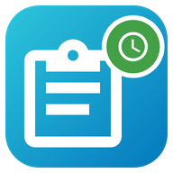

<!doctype html>
<html lang="de">
<head>
<meta charset="utf-8">
<meta name="viewport" content="width=device-width, initial-scale=1, viewport-fit=cover">
<meta name="theme-color" content="#0478bd">
<meta name="apple-mobile-web-app-capable" content="yes">
<meta name="mobile-web-app-capable" content="yes">
<meta name="apple-mobile-web-app-title" content="Stundenzettel">
<meta name="robots" content="noindex">
<link rel="manifest" href="manifest.webmanifest">
<link rel="icon" href="icon-192.png">
<link rel="apple-touch-icon" href="icon-192.png">
<title>Stundenzettel</title>
<style>
:root {
  --primary-color:#0478bd; --primary-text-color:#212121; --secondary-text-color:#727272; --text-primary-color:#fff;
  --divider-color:rgba(0,0,0,.12); --primary-background-color:#f5f5f5; --secondary-background-color:#e9e9e9;
  --card-background-color:#fff; --ha-card-background:#fff; color-scheme:light;
}
/* 🌓 Hell / Dunkel: automatisch nach dem Handy – oder fest (⚙️ → Ansicht → Hell / Dunkel, data-theme) */
@media (prefers-color-scheme: dark) {
  :root:not([data-theme="light"]) { --primary-text-color:#e1e1e1; --secondary-text-color:#9b9b9b; --divider-color:rgba(225,225,225,.12);
    --primary-background-color:#111418; --secondary-background-color:#262a31; --card-background-color:#1c1f24; --ha-card-background:#1c1f24; color-scheme:dark; }
}
:root[data-theme="dark"] { --primary-text-color:#e1e1e1; --secondary-text-color:#9b9b9b; --divider-color:rgba(225,225,225,.12);
  --primary-background-color:#111418; --secondary-background-color:#262a31; --card-background-color:#1c1f24; --ha-card-background:#1c1f24; color-scheme:dark; }
* { box-sizing:border-box; }
html, body { margin:0; background:var(--primary-background-color); color:var(--primary-text-color); font:16px/1.4 Roboto, system-ui, -apple-system, "Segoe UI", sans-serif; }
body { padding:calc(env(safe-area-inset-top) + 8px) 8px calc(env(safe-area-inset-bottom) + 24px); }
#wrap { max-width:640px; margin:0 auto; }
.login { max-width:400px; margin:14vh auto 0; text-align:center; padding:0 18px; }
.login img { width:88px; height:88px; }
.big { font:inherit; border:0; background:var(--primary-color); color:#fff; border-radius:12px; padding:13px 22px; font-size:17px; font-weight:600; margin-top:14px; cursor:pointer; width:100%; }
.small { font-size:13px; color:var(--secondary-text-color); }
.lform { display:flex; flex-direction:column; gap:12px; text-align:left; margin-top:16px; }
.lform label { display:flex; flex-direction:column; gap:4px; font-size:14px; color:var(--secondary-text-color); }
.lform input, .lform select { font:inherit; font-size:17px; padding:11px 12px; border-radius:10px; border:1px solid var(--divider-color); background:var(--card-background-color); color:var(--primary-text-color); }
.lerr { margin:0; padding:9px 12px; border-radius:10px; background:rgba(219,68,55,.14); color:#db4437; font-size:14px; }
button.link { font:inherit; background:none; border:0; color:inherit; text-decoration:underline; cursor:pointer; padding:4px; }
.foot { text-align:center; margin:22px 0 8px; }
.foot button { font:inherit; font-size:13px; color:var(--secondary-text-color); background:none; border:1px solid var(--divider-color); border-radius:10px; padding:8px 12px; cursor:pointer; }
.lock { position:fixed; inset:0; z-index:90; background:var(--primary-background-color); display:flex; flex-direction:column; align-items:center; justify-content:center; padding:24px; text-align:center; }
.lock .ico { font-size:64px; }
body.locked #wrap { display:none; }
.toast { position:fixed; left:50%; bottom:calc(env(safe-area-inset-bottom) + 20px); transform:translateX(-50%); background:#323232; color:#fff;
  border-radius:10px; padding:10px 16px; font-size:14px; max-width:90vw; z-index:100; box-shadow:0 4px 16px rgba(0,0,0,.3); }
</style>
</head>
<body>
<div id="wrap"></div>
<script>
"use strict";
// 📱 Stundenzettel – die Offline-App. Version __SZ_VERSION__
// Hier läuft GENAU DIESELBE Karte wie im Dashboard. Diese Seite spielt nur „Home Assistant“ für sie:
// Anmeldung, Verbindung und „letzten Stand merken“. Den Postausgang (Änderungen ohne Netz) hat die Karte selbst.
window.__szOfflineApp = true;
try { const t = localStorage.getItem("szapp_theme"); if (t === "light" || t === "dark") document.documentElement.setAttribute("data-theme", t); } catch (_) { /* egal */ }
const BASE = "/stundenzettel/app/";
const CLIENT_ID = location.origin + BASE;
const VERSION = "__SZ_VERSION__";
const BLANG = String(navigator.language || "de").toLowerCase().startsWith("de") ? "de" : "en"; // 🌐 Sprache vom Handy
const K = { auth: "szapp_auth", user: "szapp_user" };
const get = (k, d) => { try { const v = localStorage.getItem(k); return v == null ? d : JSON.parse(v); } catch (_) { return d; } };
const put = (k, v) => { try { localStorage.setItem(k, JSON.stringify(v)); } catch (_) { /* egal */ } };
const esc = (x) => String(x ?? "").replace(/[&<>"]/g, (c) => ({ "&": "&amp;", "<": "&lt;", ">": "&gt;", '"': "&quot;" }[c]));

function toast(msg) {
  document.querySelectorAll("body > .toast").forEach((t) => t.remove());
  const el = document.createElement("div"); el.className = "toast"; el.textContent = msg;
  document.body.append(el); setTimeout(() => el.remove(), 3500);
}
window.addEventListener("hass-notification", (e) => toast(e.detail?.message || ""));

// ---------------------------------------------------------------- 🎨 Symbole (in Home Assistant gibt es <ha-icon> schon – hier bauen wir es nach)
let ICONS = null;
const iconWait = new Set();
fetch(BASE + "icons.json?v=" + VERSION).then((r) => r.json()).then((j) => { ICONS = j; iconWait.forEach((el) => el.draw()); iconWait.clear(); }).catch(() => {});
class FkIcon extends HTMLElement {
  static get observedAttributes() { return ["icon"]; }
  constructor() {
    super();
    this.attachShadow({ mode: "open" }).innerHTML = `<style>:host{display:inline-flex;width:var(--mdc-icon-size,24px);height:var(--mdc-icon-size,24px);vertical-align:middle}svg{width:100%;height:100%;fill:currentColor}</style><svg viewBox="0 0 24 24"><path></path></svg>`;
  }
  attributeChangedCallback() { this.draw(); }
  connectedCallback() { this.draw(); }
  draw() {
    const name = String(this.getAttribute("icon") || "").replace(/^mdi:/, "");
    if (!ICONS) { iconWait.add(this); return; }
    this.shadowRoot.querySelector("path").setAttribute("d", ICONS[name] || "");
  }
}
if (!customElements.get("ha-icon")) customElements.define("ha-icon", FkIcon);

// ---------------------------------------------------------------- 🔑 Anmeldung (dieselbe offizielle Anmeldung wie die HA-Seite, inkl. 2-Faktor)
let auth = get(K.auth, null);
async function tokenRequest(body) {
  const r = await fetch("/auth/token", { method: "POST", headers: { "Content-Type": "application/x-www-form-urlencoded" }, body: new URLSearchParams({ client_id: CLIENT_ID, ...body }) });
  if (!r.ok) throw Object.assign(new Error("token " + r.status), { status: r.status });
  const j = await r.json();
  return { access: j.access_token, refresh: j.refresh_token || auth?.refresh, expires: Date.now() + (j.expires_in || 1800) * 1000 - 60000 };
}
function startLogin() { // 🚪 alter Weg über die HA-Anmeldeseite (z. B. „vertrauenswürdige Netzwerke“)
  const state = Math.random().toString(36).slice(2);
  try { localStorage.setItem("szapp_state", state); } catch (_) { /* egal */ }
  location.href = "/auth/authorize?" + new URLSearchParams({ response_type: "code", client_id: CLIENT_ID, redirect_uri: CLIENT_ID, state });
}
async function finishLogin() {
  const q = new URLSearchParams(location.search);
  if (!q.get("code")) return;
  history.replaceState(null, "", BASE);
  const saved = localStorage.getItem("szapp_state");
  localStorage.removeItem("szapp_state");
  if (!saved || q.get("state") !== saved) return;
  auth = await tokenRequest({ grant_type: "authorization_code", code: q.get("code") });
  put(K.auth, auth);
}
let flow = null, flowBusy = false, flowN = 0, flowLast = {};
const LABEL = { username: "Benutzername", password: "Passwort", code: "Code aus der Authentifizierungs-App" };
const ERR = { invalid_auth: "Benutzername oder Passwort stimmt nicht.", invalid_login: "Benutzername oder Passwort stimmt nicht.", invalid_code: "Der Code stimmt nicht.", login_expired: "Zu lange gewartet – bitte nochmal." };
async function flowPost(path, body) {
  const r = await fetch(path, { method: "POST", headers: { "Content-Type": "application/json" }, body: JSON.stringify(body) });
  const j = await r.json().catch(() => ({}));
  if (!r.ok) throw Object.assign(new Error(j.message || "login " + r.status), { status: r.status });
  return j;
}
async function flowStart() {
  if (flowBusy) return;
  flowBusy = true;
  try {
    const j = await (await fetch("/auth/providers")).json();
    const list = Array.isArray(j) ? j : j.providers || [];
    const pr = list.find((x) => x.type === "homeassistant") || list[0];
    if (!pr) throw new Error("no provider");
    await flowStep(await flowPost("/auth/login_flow", { client_id: CLIENT_ID, handler: [pr.type, pr.id], redirect_uri: CLIENT_ID }));
  } catch (err) {
    flow = null; toast(err.status === 403 ? "Zu viele Versuche – Home Assistant hat kurz gesperrt." : "Anmelden geht gerade nicht – kein Netz?"); update();
  } finally { flowBusy = false; }
}
async function flowStep(res) {
  if (res.type === "create_entry") {
    flow = null;
    auth = await tokenRequest({ grant_type: "authorization_code", code: res.result });
    put(K.auth, auth); update(); connect(); return;
  }
  if (res.type === "abort") { flow = null; toast("Anmeldung abgebrochen"); update(); return; }
  flow = { n: ++flowN, id: res.flow_id, step: res.step_id, schema: res.data_schema || [], errors: res.errors || {} };
  update();
}
async function flowSubmit(form) {
  if (!flow || flowBusy) return;
  flowBusy = true;
  const data = {};
  for (const f of flow.schema) { const el = form.elements[f.name]; if (el) data[f.name] = f.type === "boolean" ? el.checked : el.value; }
  flowLast = { username: data.username };
  try { await flowStep(await flowPost(`/auth/login_flow/${encodeURIComponent(flow.id)}`, { ...data, client_id: CLIENT_ID })); }
  catch (err) { flow = null; toast(err.status === 403 ? "Zu viele Versuche – Home Assistant hat kurz gesperrt." : "Das hat nicht geklappt – bitte nochmal."); update(); }
  finally { flowBusy = false; }
}
function flowHtml() {
  const err = Object.values(flow.errors).map((e) => ERR[e] || e);
  const fields = flow.schema.map((f) => {
    const lab = LABEL[f.name] || f.name;
    if (f.type === "select") {
      const opts = Array.isArray(f.options) ? f.options : Object.entries(f.options || {});
      return `<label>${esc(lab)}<select name="${esc(f.name)}">${opts.map((o) => `<option value="${esc(o[0])}">${esc(o[1])}</option>`).join("")}</select></label>`;
    }
    if (f.type === "boolean") return `<label style="flex-direction:row;gap:8px"><input type="checkbox" name="${esc(f.name)}"> ${esc(lab)}</label>`;
    const kind = f.name === "password" ? `type="password" autocomplete="current-password"` : f.name === "code" ? `inputmode="numeric" autocomplete="one-time-code"` : `autocomplete="username" autocapitalize="none"`;
    return `<label>${esc(lab)}<input name="${esc(f.name)}" ${kind} value="${esc(flowLast[f.name] || "")}" required></label>`;
  }).join("");
  return `<form class="lform" data-flow="${flow.n}">${err.length ? `<p class="lerr">${err.map(esc).join("<br>")}</p>` : ""}${fields}<button class="big" type="submit">${flow.step === "init" ? "Anmelden" : "Weiter"}</button></form>`;
}
async function accessToken() {
  if (auth && auth.expires > Date.now()) return auth.access;
  auth = { ...(await tokenRequest({ grant_type: "refresh_token", refresh_token: auth.refresh })), refresh: auth.refresh };
  put(K.auth, auth);
  return auth.access;
}

// ---------------------------------------------------------------- 🔌 Verbindung zu Home Assistant
let ws = null, ready = false, msgId = 1, retry = null;
const pending = new Map();
const subs = new Map();
let user = get(K.user, null);
function connect() {
  clearTimeout(retry);
  if (!auth || (ws && ws.readyState <= 1)) return;
  if (navigator.onLine === false) { update(); return; }
  try { ws = new WebSocket(location.origin.replace(/^http/, "ws") + "/api/websocket"); } catch (_) { later(); return; }
  ws.onmessage = async (ev) => {
    const m = JSON.parse(ev.data);
    if (m.type === "auth_required") {
      try { ws.send(JSON.stringify({ type: "auth", access_token: await accessToken() })); }
      catch (err) { if ([400, 401].includes(err.status)) logout(true); else ws.close(); }
    } else if (m.type === "auth_invalid") {
      auth.expires = 0; put(K.auth, auth); ws.close();
    } else if (m.type === "auth_ok") {
      ready = true;
      for (const s of subs.values()) sendSub(s);
      raw({ type: "auth/current_user" }).then((u) => { user = u; put(K.user, u); update(); }).catch(() => {});
      update();
    } else if (m.type === "event") {
      for (const s of subs.values()) if (s.serverId === m.id) s.cb(m.event);
    } else if (m.type === "result") {
      const p = pending.get(m.id);
      if (p) { pending.delete(m.id); m.success ? p.ok(m.result) : p.fail(m.error || {}); }
    }
  };
  ws.onclose = () => { ready = false; for (const p of pending.values()) p.fail({ code: "lost", message: "📴 Keine Verbindung" }); pending.clear(); update(); later(); };
  ws.onerror = () => { try { ws.close(); } catch (_) { /* egal */ } };
}
function later() { clearTimeout(retry); retry = setTimeout(connect, 5000); }
function raw(msg) {
  return new Promise((ok, fail) => {
    if (!ready) { fail({ code: "lost", message: "📴 Ohne Netz geht das gerade nicht" }); return; }
    const id = msgId++;
    pending.set(id, { ok, fail });
    ws.send(JSON.stringify({ id, ...msg }));
  });
}
function sendSub(s) {
  s.serverId = msgId++;
  pending.set(s.serverId, { ok: () => {}, fail: () => {} });
  ws.send(JSON.stringify({ id: s.serverId, ...s.msg }));
}
window.addEventListener("online", connect);
window.addEventListener("offline", () => { try { ws?.close(); } catch (_) { /* egal */ } update(); });
// 🔒 Das Schloss in der Karte sperrt die ganze App sofort (nur wenn die Fingerabdruck-Sperre an ist)
window.__szAppLock = { on: () => !!lock, now: () => { if (lock) { locked = true; showLock(); } } };
document.addEventListener("visibilitychange", () => { if (!document.hidden) connect(); });

// ---------------------------------------------------------------- 👆 App-Sperre mit Fingerabdruck / Face ID
// Nutzt die Entsperr-Funktion vom Handy (WebAuthn, wie Passkeys). Funktioniert auch ohne Netz.
// Ehrlich: Das ist eine Sperre vor der Anzeige – kein Tresor für den Browser-Speicher.
const LOCK_KEY = "szapp_lock";
const LOCK_AFTER = 60 * 1000; // nach 1 Minute im Hintergrund wieder sperren
let lock = get(LOCK_KEY, null); // { id: "base64url" }
let locked = !!lock;
let hiddenAt = 0;
const b64 = (buf) => btoa(String.fromCharCode(...new Uint8Array(buf))).replace(/\+/g, "-").replace(/\//g, "_").replace(/=+$/, "");
const unb64 = (s) => Uint8Array.from(atob(s.replace(/-/g, "+").replace(/_/g, "/")), (c) => c.charCodeAt(0));
const rnd = (n) => crypto.getRandomValues(new Uint8Array(n));
async function bioAvailable() {
  try { return !!(window.isSecureContext && window.PublicKeyCredential && await PublicKeyCredential.isUserVerifyingPlatformAuthenticatorAvailable()); } catch (_) { return false; }
}
async function lockEnable() {
  if (!(await bioAvailable())) { toast("Dieses Handy/dieser Browser kann hier keinen Fingerabdruck/Face ID (braucht https)."); return; }
  try {
    const cred = await navigator.credentials.create({ publicKey: {
      challenge: rnd(32), rp: { name: "Stundenzettel", id: location.hostname },
      user: { id: rnd(16), name: (user?.name || "Stundenzettel") + " · Stundenzettel", displayName: "Stundenzettel-App" },
      pubKeyCredParams: [{ type: "public-key", alg: -7 }, { type: "public-key", alg: -257 }],
      authenticatorSelection: { authenticatorAttachment: "platform", userVerification: "required", residentKey: "discouraged" },
      timeout: 60000,
    } });
    lock = { id: b64(cred.rawId) }; put(LOCK_KEY, lock);
    toast("🔒 Sperre ist an");
  } catch (_) { toast("Sperre nicht eingeschaltet (abgebrochen)"); }
  update();
}
async function lockCheck() {
  try {
    await navigator.credentials.get({ publicKey: { challenge: rnd(32), rpId: location.hostname, allowCredentials: [{ type: "public-key", id: unb64(lock.id) }], userVerification: "required", timeout: 60000 } });
    return true;
  } catch (_) { return false; }
}
async function lockDisable() {
  if (!(await lockCheck())) { toast("Nicht bestätigt – Sperre bleibt an"); return; }
  lock = null; localStorage.removeItem(LOCK_KEY); toast("🔓 Sperre ist aus"); update();
}
function showLock() {
  document.body.classList.toggle("locked", locked);
  let el = document.querySelector(".lock");
  if (!locked) { el?.remove(); return; }
  if (el) return;
  el = document.createElement("div");
  el.className = "lock";
  el.innerHTML = `<div class="ico">🔒</div><h2>Stundenzettel ist gesperrt</h2><p class="small">Mit Fingerabdruck, Face ID oder Handy-PIN entsperren.</p>
    <button class="big" id="unlockBtn" style="max-width:320px">👆 Entsperren</button>
    <p class="small" style="margin-top:28px"><button class="link" id="lockOut">Klappt nicht? Abmelden und neu anmelden</button></p>`;
  document.body.append(el);
  el.querySelector("#unlockBtn").onclick = async () => { if (await lockCheck()) { locked = false; showLock(); update(); } else toast("Nicht erkannt – nochmal versuchen"); };
  el.querySelector("#lockOut").onclick = () => { if (confirm("Abmelden? Die Sperre wird dabei ausgeschaltet.")) { localStorage.removeItem(LOCK_KEY); lock = null; locked = false; logout(false); } };
}
document.addEventListener("visibilitychange", () => {
  if (document.hidden) { hiddenAt = Date.now(); return; }
  if (lock && auth && hiddenAt && Date.now() - hiddenAt > LOCK_AFTER) { locked = true; showLock(); }
});

// ---------------------------------------------------------------- 🏠 „Home Assistant“ für die Karte
function makeHass() {
  return {
    connected: ready,
    language: BLANG,
    locale: { language: BLANG },
    user: user || { id: "", name: "", is_admin: false },
    states: {},
    callWS: (msg) => raw(msg),
    connection: {
      async subscribeMessage(cb, msg) {
        const key = "s" + msgId++;
        const s = { msg, cb };
        subs.set(key, s);
        if (ready) sendSub(s);
        return () => { subs.delete(key); if (ready && s.serverId) raw({ type: "unsubscribe_events", subscription: s.serverId }).catch(() => {}); };
      },
    },
  };
}

// ---------------------------------------------------------------- 🖼️ Seite
let card = null;
function update() {
  const wrap = document.getElementById("wrap");
  if (!auth) {
    card = null; locked = false; showLock();
    if (flow && wrap.querySelector(`form.lform[data-flow="${flow.n}"]`)) return;
    wrap.innerHTML = `<div class="login"><h1>Stundenzettel</h1>
      <p>Einmal mit deinem Home-Assistant-Benutzer anmelden. Danach siehst du deinen Stundenzettel auch ohne Netz.</p>
      ${navigator.onLine === false ? `<p class="small">Zum ersten Anmelden braucht es einmal Netz.</p>` : flow ? flowHtml() : `<button class="big" id="loginBtn">Anmelden</button>`}
      <p class="small">Tipp: Im Browser-Menü „Zum Startbildschirm hinzufügen“ – dann hast du ein eigenes Symbol.</p>
      ${navigator.onLine === false ? "" : `<p class="small"><button class="link" id="haLoginBtn" type="button">Mit der Home-Assistant-Seite anmelden</button></p>`}</div>`;
    document.getElementById("loginBtn")?.addEventListener("click", flowStart);
    document.getElementById("haLoginBtn")?.addEventListener("click", startLogin);
    const lf = wrap.querySelector("form.lform");
    if (lf) { lf.addEventListener("submit", (e) => { e.preventDefault(); flowSubmit(lf); }); setTimeout(() => lf.querySelector("input:not([value]),input")?.focus(), 30); }
    return;
  }
  if (!customElements.get("stundenzettel-card")) {
    if (!wrap.querySelector(".loading")) wrap.innerHTML = `<p class="small loading" style="text-align:center;margin-top:30vh">⏳ Lade …</p>`;
    return;
  }
  if (!card) {
    wrap.innerHTML = "";
    card = document.createElement("stundenzettel-card");
    const ent = get("szapp_entry", ""); // 👥 welcher Stundenzettel (leer = der erste)
    card.setConfig({ title: "Stundenzettel", ...(ent ? { entry: ent } : {}) });
    wrap.append(card);
    const foot = document.createElement("div");
    foot.className = "foot";
    foot.innerHTML = `<label id="entryWrap" hidden>👥 Stundenzettel: <select id="entryPick"></select></label> <button id="lockBtn" hidden></button> <button id="logoutBtn">Abmelden</button><p class="small">Abmelden meldet nur dieses Handy ab. Deine Daten in Home Assistant bleiben komplett erhalten, nur die Kopie hier im Handy wird gelöscht.</p>`;
    wrap.append(foot);
    document.getElementById("lockBtn").addEventListener("click", () => (lock ? lockDisable() : lockEnable()));
    document.getElementById("logoutBtn").addEventListener("click", () => {
      const q = szKeys("stundenzettel_queue").flatMap((k) => JSON.parse(localStorage.getItem(k) || "[]"));
      if (confirm(q.length ? `Abmelden? ${q.length} noch nicht gesendete Änderung(en) gehen verloren. Alles andere bleibt in Home Assistant erhalten.` : "Abmelden? Deine Daten in Home Assistant bleiben erhalten – nur die Kopie in diesem Handy wird gelöscht.")) logout(false);
    });
  }
  const lb = document.getElementById("lockBtn");
  if (lb) {
    lb.textContent = lock ? "🔒 Fingerabdruck-Sperre: an" : "👆 Fingerabdruck-Sperre einschalten";
    // 👆 Nur zeigen, wo es auch geht (Fingerabdruck/Face ID + https). Ist sie schon an, bleibt der Knopf zum Ausschalten.
    if (lock) lb.hidden = false;
    else bioAvailable().then((ok) => { lb.hidden = !ok; });
  }
  showLock();
  card.hass = makeHass();
  pickEntries();
  // ⏱️ Kurzbefehl vom Startbildschirm (lange aufs App-Symbol drücken): „Kommen“ oder „Gehen“
  if (shortcut === "in" || shortcut === "out") { const what = shortcut; shortcut = null; setTimeout(() => card.stundenzettelShortcut?.(what), 400); }
}
let shortcut = new URLSearchParams(location.search).get("do");
// 👥 Gibt es mehrere Stundenzettel (z. B. für zwei Personen)? Dann unten eine Auswahl zeigen.
let entriesAsked = false;
function pickEntries() {
  if (entriesAsked || !card || navigator.onLine === false) return;
  entriesAsked = true;
  makeHass().callWS({ type: "stundenzettel/entries" }).then((r) => {
    const ents = r?.entries || [], sel = document.getElementById("entryPick"), wrapEl = document.getElementById("entryWrap");
    if (!sel || ents.length < 2) return;
    const cur = get("szapp_entry", "");
    sel.innerHTML = ents.map((e) => { const v = e.first ? "" : e.entry_id; return `<option value="${v}" ${v === cur ? "selected" : ""}>${String(e.title).replace(/[<>&"]/g, "")}</option>`; }).join("");
    wrapEl.hidden = false;
    sel.onchange = () => { put("szapp_entry", sel.value); card.setConfig({ title: "Stundenzettel", ...(sel.value ? { entry: sel.value } : {}) }); };
  }).catch(() => { entriesAsked = false; });
}
function szKeys(...pre) { const out = []; try { for (let i = 0; i < localStorage.length; i++) { const k = localStorage.key(i); if (pre.some((p) => k === p || k.startsWith(p + "_"))) out.push(k); } } catch (_) { /* egal */ } return out; }
if (shortcut) history.replaceState(null, "", BASE);
function logout(silent) {
  const refresh = auth?.refresh;
  auth = null;
  localStorage.removeItem(K.auth);
  if (!silent) {
    // 🔒 Alles Persönliche aus dem Handy löschen
    for (const k of [K.user, ...szKeys("stundenzettel_data", "stundenzettel_queue"), "stundenzettel_hidden", "stundenzettel_calm", "szapp_entry", LOCK_KEY]) localStorage.removeItem(k);
    user = null;
    if (refresh) fetch("/auth/token", { method: "POST", body: new URLSearchParams({ action: "revoke", token: refresh }) }).catch(() => {});
  }
  try { ws?.close(); } catch (_) { /* egal */ }
  subs.clear();
  location.reload();
}

(async () => {
  if ("serviceWorker" in navigator) navigator.serviceWorker.register(BASE + "sw.js", { scope: BASE }).catch(() => {});
  try { await finishLogin(); } catch (_) { toast("Anmeldung hat nicht geklappt 🙈"); }
  const s = document.createElement("script");
  s.type = "module";
  s.src = "/stundenzettel/files/stundenzettel-card.js?v=" + VERSION;
  s.onload = () => customElements.whenDefined("stundenzettel-card").then(update);
  document.head.append(s);
  update();
  connect();
})();
</script>
</body>
</html>
